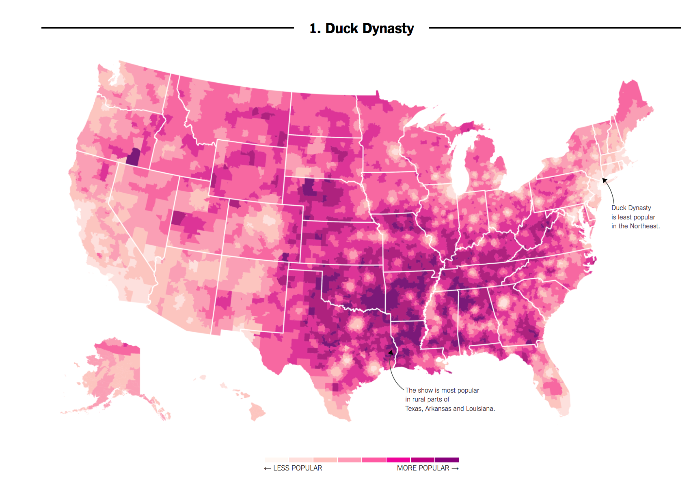
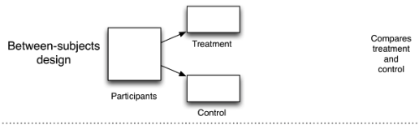
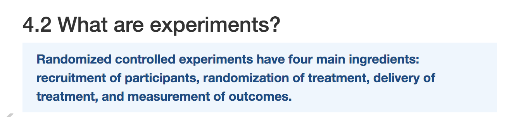
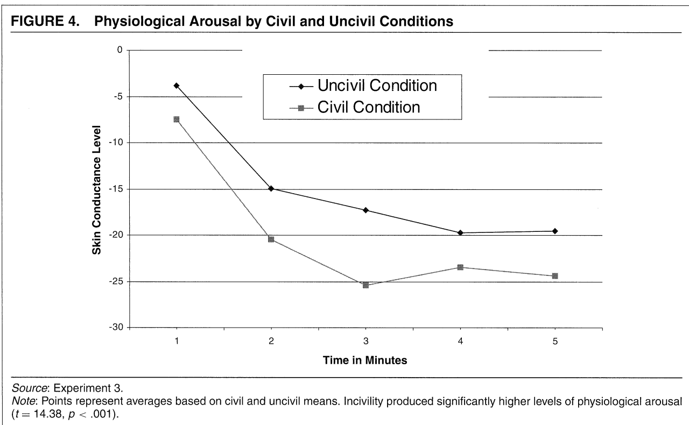
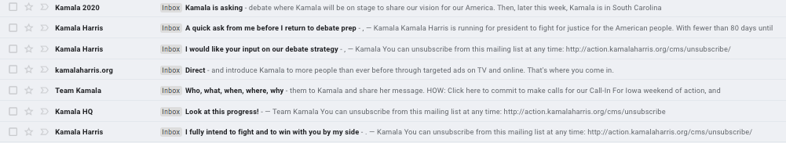

resume <- read.csv("resume.csv", stringsAsFactors = T)3 Causation with Experiments
Recall that we said, four primary goals of social science include:
- Describe and measure
- Has the U.S. population increased?
- Explain, evaluate, and recommend (study of causation)
- Does expanding Medicaid improve health outcomes?
- Predict
- Who will win the next election?
- Discover
- How do policies diffuse across states?
In this section, we start to explore the goal of explanation–making causal claims.
3.1 What separates causation from correlation?
Here’s an example. In 2016, researchers at the NY Times noticed that areas in the country where the television show Duck Dynasty was popular also tended to support Donald Trump at higher rates.

If we put our social scientist hat on, we might want to distinguish whether this is a causal or, more likely, just a correlational relationship:
- Correlation: Areas that watch Duck Dynasty are more likely to support Trump (degree to which two variables “move together”)
- Causality: Watching Duck Dynasty (vs. not watching) increases your support of Trump.
Causal Question: Does the manipulation of one factor (the treatment), (holding everything else constant), cause a change in an outcome?
3.1.1 Potential Outcomes Framework
When studying causal relationships, we distinguish two concepts:
- treatment: variable whose change may produce a change in the outcome (e.g., watching vs. not watching Duck Dynasty)
- outcome (\(Y\)): what may change as a result (e.g., their support for Trump)
We imagine two states of the world or “potential outcomes.”
- \(Y(1)\): the outcome if the treatment is administered (e.g., watching the show)
- \(Y(0)\): the outcome if the treatment is NOT administered or maybe something else is (e.g., not watching the show)
Political Science Example: How does voter turnout (\(Y\)) change as a result of varying whether someone receives a mail-in ballot (the treatment)?
- \(Y(\text{sent a mail-in ballot})\): do you vote or not
- \(Y(\text{not sent a mail-in ballot})\): do you vote or not
We compare your likelihood of turning out to vote in a world where you did receive a mail-in ballot vs. a counterfactual state of the world in which you did not receive a mail-in ballot, generally assuming that this is the only thing that is different between these two potential states of the world.
In many cases in social science, we might start by observing some connection in the real world. To make a causal claim, we then have to imagine what that counterfactual state of the world would be. Examples:
Causal Question: Does the minimum wage increase the unemployment rate?
- (Hypothetical) Factual: An unemployment rate went up after the minimum wage increased
- Implied Counterfactual: Would the unemployment rate have gone up, had the minimum wage increase not occurred?
Causal Question: Does the gender of a political messenger influence the persuasiveness of the message?
- (Hypothetical) Factual: Suppose a political messenger perceived as a man had a somewhat persuasive effect delivering a message on abortion.
- Implied Counterfactual: Would a political messenger perceived as a woman have a similar or different persuasive effect?
We use causal logic all of the time outside of social science.
For example, many viewers get angry after watching the movie Titanic because they believe Jack did not have to die. We can place their claims in our causal framework:
- Outcome: Jack Surviving the Titanic
- Potential Outcomes in two states of the world
- Rose did not share the floating door, and Jack died.
- Counterfactual question: If Rose had shared the floating door, would Jack have lived?
In Bit by Bit, Matt Salganik notes that sometimes cause-and-effect questions are implicit. For example, in more general questions about maximization of some performance metric, we might want to compare several alternatives:
The question “What color should the donate button be on an NGO’s website?” is really lots of questions about the effect of different button colors on donations.
- Factual: A voter donates some amount with a black button
- Counterfactual: What would a voter donate if the button were blue?
- Counterfactual: What would a voter donate if the button were red?
What other causal questions might social scientists or data scientists ask?
3.1.2 Causal Effects
When we are conducting a causal analysis, we will want to estimate a causal effect.
- Causal effects are all about ideal comparisons between treated vs. untreated
A causal effect is the change in the outcome Y that is caused by a change in the treatment variable.
- \(Y(1) - Y(0)\) = causal effect or “treatment effect”
- e.g., Donation if contacted - Donation if not contacted
We often want to know the average treatment effect in some population, not just the causal effect for a single individual. Here, we might ask, on average, how much would our outcome change if our units were treated instead of untreated. To do so, we simply sum up all of the causal effects and divide them by the number of units in our population.
- \(\frac{1}{N} \sum_{i=1}^N (Y_i (1)-Y_i (0))\) = “average treatment effect” (ATE)
- e.g., Average donations if contacted - Average donations if not contacted
Note: If the math above is helpful, you can use it. If it is difficult to read, focus on the plain language definitions that go before it. The notation here is less important than the conceptual understanding.
3.1.3 Fundamental Problem of Causal Inference
The problem: Fundamental Problem of Causal Inference
What makes the evaluation of causal claims difficult, is that in the real world, we suffer from the fundamental problem of causal inference:
- For any individual, we only get to see (observe) the result from one state of the world
- This makes that subtraction of potential outcomes impossible.
(Unless we are in Groundhog Day)
3.2 Randomized Controlled Trials
One approach for addressing the fundamental problem of causal inference is to simulate two potential states of the world through random assignment: Randomized Controlled Trials / Experiments
Experiments approximate an ideal factual vs. counterfactual comparison
- We randomly assign one group to receive a “treatment” and another not to receive a treatment (the control)
- There can be more than two groups. The key is that each group varies (is manipulated) in some way.
- When treatment assignment is randomized, the only thing that distinguishes the treatment group from the control group, besides the treatment itself, is chance.

This allows us to compare the average outcomes between groups in order to estimate our causal effects (more on this below).
3.2.1 Experiments: Why Randomize?
Randomization is essential for being able to identify and isolate the causal effect of the treatment on the outcome.
Without randomization, there may be several reasons why two groups differ beyond the treatment of interest.
- For example, if we randomly assigned half of Rutgers seniors to go to a Sabrina Carpenter concert and half to go to a Bruce Springsteen concert we would expect the groups to have about equal proportions of female students, average age, racial composition, majors, etc.
- (If we didn’t randomly assign, and just let people “select” into watching a particular concert, the groups could look very different.)
But because we randomized assignment, on average, we’d expect the two groups to be identical except for the treatment– in this case, which concert they attended.
- Great news! This means any differences in the outcomes between the two groups can be attributed to the treatment. So if we wanted to see if going to a Bruce Springsteen show leads people to hold more favorable opinions of New Jersey, we could compare the average attitudes toward NJ among seniors who attended the show vs. attended the Carpenter show.
3.2.2 Experiments: How to Analyze
Difference in Means: We compare each group’s average outcome by subtracting one from the other to estimate the average treatment effect (ATE) aka the average causal effect of the treatment.
- \(\widehat{ATE} = \bar{Y}(treatment) - \bar{Y}(control)\)
This is an estimate of, on average, how much our outcome would change if units went from being untreated to treated.
- E.g., on average how much a person donates to a campaign if contacted by phone compared to if not contacted by phone.
3.2.3 Ingredients of an Experiment
From Bit by Bit

For every experiment, you should be able to
- State the causal question or relationship of interest
- Describe how the experiment will be implemented (e.g., recruitment of subjects)
- Identify and describe the randomization into treatment group(s) and control group and what happens in each group
- Identify the outcome of interest, how it is measured
- Evaluate the relevant comparison (between two different experimental conditions)
We will turn to an example in the next section.
3.3 Application: Is there racial discrimination in the labor market?
Marianne Bertrand and Sendhil Mullainathan. 2004. “Are Emily and Greg more employable than Lakisha and Jamal? A field experiment on labor market discrimination.”
“We perform a field experiment to measure racial discrimination in the labor market. We respond with fictitious resumes to help-wanted ads in Boston and Chicago newspapers.”
- Recruitment: Construct resumes to send to ads
- Randomization: To manipulate perception of race, each resume is (randomly) assigned
- Treatment: either a very African American sounding name
- Control: or a very White sounding name
- Outcome: Does the resume receive a callback?
- Comparison: Callback rates for African American (sounding) names vs. White (sounding) names (the difference in means between groups)
For a video explainer of the code in this section, see below. The video only discusses the code. Use the notes and lecture discussion for additional context. (Via youtube, you can speed up the playback to 1.5 or 2x speed.)
Let’s load the data. Note: When we have variables that are text-based categories, we may want to tell R to treat these “strings” of text information as factor variables, a particular type of variable that represents data as a set of nominal (unordered) or ordinal (ordered) categories. We do this with the stringsAsFactors argument.
resume <- read.csv("https://raw.githubusercontent.com/ktmccabe/teachingdata/main/resume.csv",
stringsAsFactors = T)Variables and Description
firstname: first name of the fictitious job applicantsex: sex of applicant (female or male)race: race of applicant (black or white)call: whether a callback was made (1 = yes, 0 = no)
The data contain 4870 resumes and 4 variables.
nrow(resume) # number of rows[1] 4870ncol(resume) # number of columns[1] 4dim(resume) # number of rows and columns[1] 4870 4Note: These data look a little different from what we used last week. For example, the sex and race variables contain words, not numbers.
head(resume) firstname sex race call
1 Allison female white 0
2 Kristen female white 0
3 Lakisha female black 0
4 Latonya female black 0
5 Carrie female white 0
6 Jay male white 03.3.1 Variable classes
We can check the class of each variable: Look, we have a new type, a “factor” variable.
class(resume$firstname)[1] "factor"class(resume$sex)[1] "factor"class(resume$race)[1] "factor"class(resume$call)[1] "integer"We have now encountered numeric, character, and factor vectors and/or variables in R. Note: This is simply how R understands them. Sometimes R can get it wrong. For example, if we write:
somenumbers <- c("1", "3", "4")
class(somenumbers)[1] "character"Because we put our numbers in quotation marks, R thinks the values in somenumbers are text. The number “3” might as well be the word “blue” for all R knows. Fortunately, we can easily switch between classes.
somenumbers <- as.numeric(somenumbers)
class(somenumbers)[1] "numeric"Here, we used as.numeric() to overwrite and change the character vector into a numeric vector.
Rules of Thumb
- Usually, we want
charactervariables to store text (e.g., open-ended survey responses) - We want
numericvariables to store numbers. - Usually, we want
factorvariables to store categories.- Within R, factor variables assign a number to each category, which is given a label or
levelin the form of text. - Categories might be ordinal or “ordered” (e.g., Very likely, Somewhat likely, Not likely) or
- Unordered (e.g., “male”, “female”)
- R won’t know if a factor variable is ordered or unordered. Alas, we have to be smarter than R.
- R might think you have a character variable when you want it to be a factor or the reverse.
- That’s when
as.factor()andas.character()are useful.
- That’s when
- Within R, factor variables assign a number to each category, which is given a label or
- Always check
class()to find out the variable type
3.4 Making tables
A nice thing about numeric and factor variables is we can use the table command to see how many observations in our data fall into each category or numerical value.
## Example: how many black vs. white sounding resumes
table(resume$race)
black white
2435 2435 As mentioned, factor variables have levels:
levels(resume$race)[1] "black" "white"3.4.1 Crosstabulation
We can also use the table command to show a crosstabulation: a table that displays the frequency of observations across two variables.
## Example: how many black vs. white sounding resumes by call backs
## We can label the two dimensions of the table with the =
table(calledback = resume$call, race = resume$race) race
calledback black white
0 2278 2200
1 157 2353.5 Conditional Means
Recall how to take a mean of a variable in our data. For example, let’s take the mean of the variable call.
mean(resume$call)[1] 0.08049281This gives us the average callbacks (or callback rate) for everyone in our data. In experiments, we want to take the mean for a specific group within our data– the treatment group, and then the mean for the control group.
Somehow, we have to identify, within our data, which rows were part of the treatment group and which were a part of the control group. In this study, we want to identify resumes with an assigned name perceived to be black vs. perceived to be white. This is in our race variable.
We will cover a couple of tools to do this, with the first being tapply.
To find how the average of one variable (e.g., our outcome- the callback rate) varies across different categories of our factor variable, we use tapply().
## take the mean of input1 by categories of input2
## mean of the call variable conducted separately by race
tapply(resume$call, INDEX=resume$race, mean) black white
0.06447639 0.09650924 This tells us the callback rate for each group of people in our data. That’s not the only way to do this, however. We can also use the tools below.
3.6 Relational Operators in R
Goal: Compare callback rates for white sounding names to black sounding names, so we need to be able to filter by race.
Good news: We have several relational operators in R that evaluate logical statements:
==, <, >, <=, >=, !=- We have a statement and R evaluates it as
TRUEorFALSE
## for each observation, does the value of race equal "black"?
resume$race == "black"By putting this logical statement within [ ], we are asking R to take the mean() of the variable resume$call for the subset of observations for which this logical statement is TRUE.
mean(resume$call[resume$race == "black"])[1] 0.06447639Ultimately, each of these paths has led us to a place where we can estimate the average treatment effect by calculation the difference in means: the difference in callback rates for black and white applicants.
We said the ATE = \(\bar{Y}(treatment) - \bar{Y}(control)\)
ate <- mean(resume$call[resume$race == "black"]) -
mean(resume$call[resume$race == "white"])
ate[1] -0.03203285How can we interpret this? Do white applicants have an advantage?
3.7 Subsetting data in R
Subsetting Dataframes in R
Maybe we are interested in differences in callbacks for females. One approach for looking at the treatment effect for female applicants, only, is to subset our data to include only female names.
- To do this, we will assign a new
data.frameobject that keeps only those rows wheresex == "female"and retains all columns - Below are two approaches for this subsetting, one that uses brackets and one that uses the
subsetfunction
## option one
females <- resume[resume$sex == "female", ]
## option two using subset()- preferred
females <- subset(resume, sex == "female")Now that we have subset the data, this simplifies estimating the ATE for female applicants only.
We said the ATE = \(\bar{Y}(treatment) - \bar{Y}(control)\)
ate.females <- mean(females$call[females$race == "black"]) -
mean(females$call[females$race == "white"])
ate.females[1] -0.032646893.7.1 Getting Booooooooolean
We can make this slightly more complex by adding more criteria. Let’s say we wanted to know the callback rates for just female black (sounding) names.
- R allows use to use
&(and) and|(or)
femaleblack <- subset(resume, sex == "female" & race == "black")We could now find the callback rate for Black females using the tools from above:
mean(femaleblack$call)[1] 0.066277843.8 Creating New Variables using Conditional statements
Note: We will cover each of these tools in this section, time permitting. Otherwise, we will return to it in a future section.
We can instead create a new variable in our main dataframe. Let’s make a variable that takes the value 1 if a name is female and black sounding and 0, otherwise
# Initialize a new variable called femaleblackname
resume$femaleblackname <- NA
# Assign a 1 to our new variable where sex is female and race is black
resume$femaleblackname[resume$sex == "female" & resume$race == "black"] <- 1
# Assign a 0 if sex is not female OR if race is not black
resume$femaleblackname[resume$sex != "female" | resume$race != "black"] <- 0We can check our work
table(name = resume$firstname, femaleblack = resume$femaleblackname) femaleblack
name 0 1
Aisha 0 180
Allison 232 0
Anne 242 0
Brad 63 0
Brendan 65 0
Brett 59 0
Carrie 168 0
Darnell 42 0
Ebony 0 208
Emily 227 0
Geoffrey 59 0
Greg 51 0
Hakim 55 0
Jamal 61 0
Jay 67 0
Jermaine 52 0
Jill 203 0
Kareem 64 0
Keisha 0 183
Kenya 0 196
Kristen 213 0
Lakisha 0 200
Latonya 0 230
Latoya 0 226
Laurie 195 0
Leroy 64 0
Matthew 67 0
Meredith 187 0
Neil 76 0
Rasheed 67 0
Sarah 193 0
Tamika 0 256
Tanisha 0 207
Todd 68 0
Tremayne 69 0
Tyrone 75 0Let’s say we wanted to know the callback rates for just female black (sounding) names.
mean(femaleblack$call)[1] 0.06627784mean(resume$call[resume$femaleblackname == 1])[1] 0.06627784BINGO: two ways to do the same thing.
3.8.1 ifelse statements
Remember how we created the variable femaleblack, well there is another way to do that in R using what are called conditional statements with ifelse().
- Can be read: If this relational statement is
TRUE, I assign you A, otherwise I assign you B
resume$femaleblackname <- ifelse(resume$sex == "female" &
resume$race == "black", 1, 0)Can be read: If sex is female and race is black, give the observation in the new variable a 1, otherwise give it a 0.
Like most things, we can also get more complicated here. Let’s say we wanted to create a variable that indicated both race and sex.
- Can be read: If this relational statement is
TRUE, I assign you A, - Otherwise if this second relational statement is
TRUE, I assign you B, - Otherwise if this third relational statement is
TRUE, I assign you C, - Otherwise I assign you D
resume$racesex <- ifelse(resume$sex == "female" &
resume$race == "black", "FemaleBlack",
ifelse(resume$sex == "female" &
resume$race == "white", "FemaleWhite",
ifelse(resume$sex == "male" &
resume$race == "white", "MaleWhite", "MaleBlack")))Note: what you assign can be numeric or text.
3.9 Types of Experiments
Experiments can vary:
- Setting: Lab, Survey, Field
- Mode: Analog vs. Digital
- And in Validity
- Internal: were the processes conducted in a correct, reliable way?
- External: can we generalize from the experiment to the real world, or would the results change?
- Context: Would people act the same way outside of the experiment?
- Recruitment: Are the people in our experiment representative of the people we care about?
- Construct
- Treatment: Is the experimental treatment similar to what people see in the real world?
- Outcome: Is the outcome something we care about in the real world? Are we measuring it in a realistic, accurate way?
Review Bit by Bit chapter 4 for more examples of social science experiments.
Example: Televised Incivility, Trust and Emotions (Mutz and Reeves)

Participants sat alone in a room with electrodes attached to their hands to measure skin conductance. Subjects viewed 20 minutes of a political debate created for the experiment, which varied in civility and politeness. Results showed respondents had more of an emotional response to the uncivil condition and expressed less trust in politicians.
Example: Online Survey Experiment
Audience Costs (Tomz)
A country sent its military to take over a neighboring country. The attacking country was led by a [dictator, who invaded OR democratically elected government, which invaded] [to get more power and resources OR because of a longstanding historical feud.
The attacking country had a [strong military, so it would OR weak military, so it would not] have taken a major effort for the United States to help push them out.
A victory by the attacking country would [hurt OR not affect] the safety and economy of the United States.
- Participants provided a different version of the vignette above, and a reaction by the president
- Presidential approval varies depending on the president’s response and the nature of the situation
Example: Digital Field Experiments in Campaigns
Example: A/B Testing in Campaigns

Emails are virtually costless. Very easy to ask: Are people more likely to open them with X subject or Y subject or Z subject?
3.10 Wrapping Up Causation with Experiments
In this section, we have discussed what it means to make a causal claim, why it is essentially impossible to make causal comparisons in real life due to the fundamental problem of causal inferences, and how experiments can help us make comparisons that approximate our causal ideals.
In the next section, we start to examine how to visualize data.
3.10.1 Summary of R tools in this section
Here are some of the R tools we used in this section:
table(): this function summarizes the frequency of observations that take a particular value. The input is one or more variables in your data.- E.g.,
table(resume$sex)ortable(resume$sex, resume$call)
- E.g.,
tapply(): this function applies a given operation likemeanto whichever variable is in the first position, separately or “conditionally” by different values of the variable in the second “index” position.- E.g.,
tapply(resume$call, INDEX=resume$race, mean)finds the average callbacks for applicants separately for different races of applicants in the data.
- E.g.,
== > < >= <= !=: Relational operators help us set up “logical statements” in R that are evaluated asTRUEorFALSE- E.g.,
resume$race == "black"evaluates whether for each observation in the race column is “black” in which case the statement isTRUEor not black, in which case the statement isFALSE - E.g.,
resume$call < 1evaluates whether for each observation in the call column has a value less than one in which case the statement isTRUEor not less than 1, in which case the statement isFALSE - We can then isolate certain parts of columns using relational operators and the brackets
[]. For example we can take the mean callbacks for applicants who are black usingmean(resume$call[resume$race == "black"])
- E.g.,
&and|: These are boolean operators that allow us to combine multiple relational operators using an AND statement (&) or an OR statement|. Note the bar is a bar that is usually above your backslash key and not a capitalized i.- E.g.,
mean(resume$call[resume$race == "black" & resume$sex == "female"])
- E.g.,
subset(): We can subset whole rows of our data using this function. It takes two inputs– the first is the name of the original dataframe, and the second is a relational statement. Usually we store this output in R by assigning the results to a new object, a dataframe that contains only those rows for which the logical statement using the relational operators is true. E.g.,females <- subset(resume, sex == "female")subsets our data to keep only those rows where applicants were female.